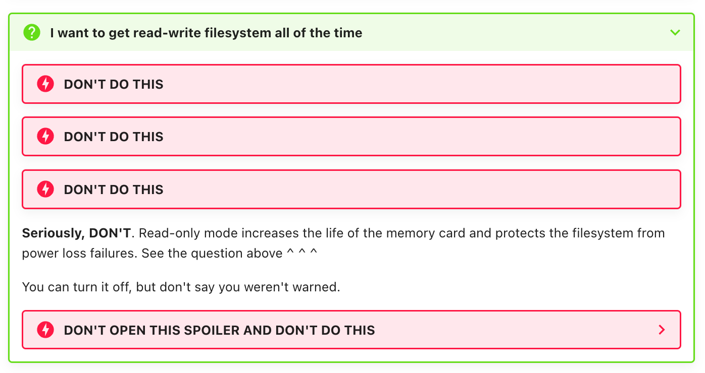
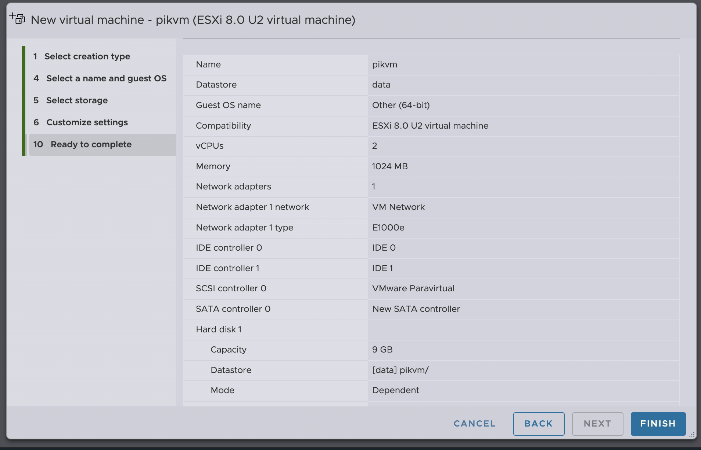
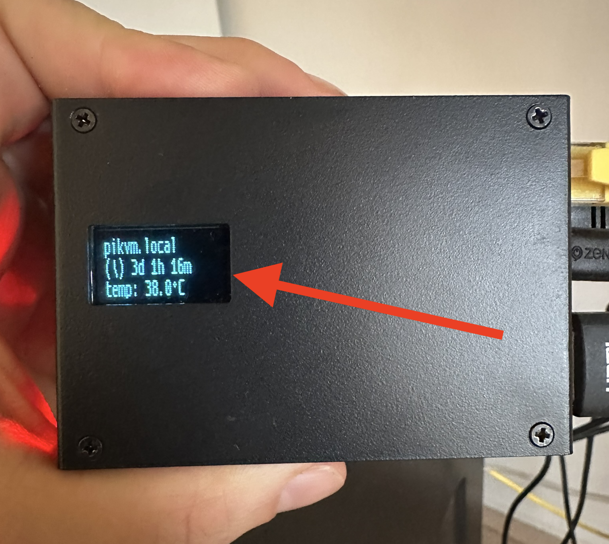

Deploying PiKVM: 7 Lessons You Already Know
TL;DR If you are thinking about using the Raspberry Pi 4 (Pi) which hosts PiKVM for multiple use cases, just get a second Pi. It will save you a lot of time.
Having not read the PiKVM documentation thoroughly (reading is hard after all) I decided to purchase the Geekworm KVM-A3 with a Pi 8GiB instead of the recommend 1GiB to host both the PiKVM OS and Windmill inside of K3S. I was about to learn this was actually a lot harder than I imagined it would be.
Windmill in PiKVM Host OS¶
PiKVM is based on Arch Linux, which supports K3s. The only notable difference? Its read-only filesystem! Let’s change that.
Steps
- Circumvent read-only file system as described here. (Tip: Look for instructions between the giant warning banners 😂).
 - Install K3s
- Setup helmfile with the Windmill chart
- Run
helmfile apply - Watch it fail 🤦♂️
Result
I was surprised it took a really long time to start the Windmill pods. Checking out the kubectl logs I came to the realisation that k3s was unable to pull an image from the registry due to a mismatch in architecture. The Windmill package only supports arm64, while PiKVM runs on armhf.
Lesson 1
Do your due diligence! Arm64 and armhf are different architectures, and software compatibility isn’t guaranteed.
PiKVM in ESXi-Arm Fling VM¶
PiKVM doesn’t offer a 64-bit version of the OS (source, source), yet I needed to run 64-bit and 32-bit software on the same machine. Enter ESXi-Arm Fling. Success guaranteed of course, as ESXi is built and maintained by a reputable company.
Steps
- Create an account on the Broadcom website and download the documentation
-
From the documentation
- Update Raspberry Pi 4 EEPROM
- Flash UEFI to sdcard from https://github.com/pftf/RPi4/releases
-
Make OSData partition 25gb by passing this in the boot screen (to not have ESXi take all the space in the thumb-drive)
-
When asked for a ESX OSData store when installing on a USB attached disk press enter to skip this, otherwise you’ll get a cryptic error and have to start over.
- Get license code from this gist who is kind enough to share it with the rest of the world.
- Add license code to ESXi
- Download official PiKVM v3 image
- Convert the image to vmdk
-
Upload
v3-hdmi-rpi4-box-latest.vmdk - Configure the
pikvmvirtual machine
 - Attach the uploaded disk to the virtual machine
- Boot the machine
- Watch if fail 🤦♂️
Result
The VM wouldn’t boot—a 32-bit PiKVM image can’t run as a 64-bit VM. I also tried to run the virtual machine with the Debian net installer: https://cdimage.debian.org/debian-cd/current/arm64/iso-cd/ and trying add grub to the root file system, but with no success.
Lesson 2
Details matter! Not all OS images work with hypervisors. The Pi has a unique boot process.
Lesson 3
Temper expectations with early-access software. ESXi-Arm Fling doesn’t support 32-bit arm VMs (source, source).
PiKVM in Pimox VM¶
Pimox (Proxmox + Pi) seemed promising based on this Reddit post with support for 32-bit VMs.
Steps
- Install Pimox (source, source, source, source, source)
- Create and run an Ansible Playbook (see pull request)
- Initialise a Proxmox VM
- Search for the device passthrough section to passthrough the following devices:
- OTG port for keyboard/mouse/mass storage device (msd) emulation on the target the PiKVM is attached to
- HDMI capture card and hardware H264 encoding for streaming target video output
- GPIO for ATX control for power on/off control
- I2C for the OLED screen
- Fail 🤦♂️
Result
Hypervisors like Proxmox can’t easily passthrough all devices from host to guest. I did some reading about vfio passthrough but that was waaaay out of my comfort zone, so I decided to give up on running PiKVM inside a vm.
Thanks for helping me set up PiKVM in a vm @srepac!
Lesson 4
Tackle highest risk first. Device passthrough in VMs is complex. Not all devices can be passed to guests.
Kvmd-armbian in Pimox Host OS¶
Suffering from sunk cost fallacy big time I kept pursuing my goal. Determined I found kvmd-armbian which is an unofficial port that supports 32-bit, 64-bit on arm AND x86 machines. Bonus points having a Discord channel for support.
Steps
- Install Pimox
- Create and run an Ansible Playbook
- Run installer from kvmd-armbian
-
Disable the Pimox firewall to get access to the kvmd web ui (Tip: Please enable it again if you plan deploy like this 😅)
- Celebrate 🎉
Result
With help from the kvmd-armbian community ❤️ it worked, but running two unofficial setups (Pimox + kvmd-armbian) in the host OS felt unsustainable. If one of the projects would stop developing I’d have to start over.
Lesson 5
Prioritize long-term maintainability.
Kvmd-armbian in Pimox LXC¶
If I can’t run kvmd-armbian on the host and not in a VM, what are my options? I looked into docker containers and LXC containers. As LXC is closer to a vm than Docker and PiKVM has specific host requirements like an additional partition for msd, I decided to go with LXC.
Steps
- Download LXC Jammy and create a container template (source)
- Create an LXC container with the following settings
- Hostname: pikvm
- UNCHECK - unprivileged container (so privileged container)
- Password: Password1234 (Tip: don’t)
- Start the LXC container and attach the console
- Run kvmd-installer
- Fix OLED screen for kvmd-armbian
- Forward devices from host to guest (I have to admit this was pretty time consuming 😅)
- Celebrate 🎉
Result
This separation enabled easier updates for both host and guest OS, leaving me less worried about potential future breakage.
Lesson 6
Ask for help! LXC and device passthrough are pretty far out of my comfort zone, I used ChatGPT which was incredibly helpful!
Kvmd-armbian in Incus LXC¶
Next I decided to see if it’s possible to use a hypervisor which is officially supported on arm AND supports LXC out of the box. I investigated the following, not an exhaustive list:
| Hypervisor | Raspberry Pi 4 support | LXC support |
|---|---|---|
| ESXI Arm Fling | ✅ | ❌ |
| Proxmox | ✅: Using unofficial Pimox port | ✅ |
| xcp ng | ❌: Work in progress | ❌: Abandoned initiative RunX |
| Cloud hypervisor | ✅ | ❌ |
| Incus | ✅ | ✅ |
The choice landed on Incus (see pull request).
Steps
- Using Raspberry Pi Imager:
- OS: Ubuntu Server 24.04 LTS 64-bit
- Username: deploy
- Hostname: provisioner
- Password:
Password1234
-
Setup Incus host using Ansible playbook
-
Start the LXC container
-
Run the kvmd-armbian installer
- Fix OLED screen for kvmd-armbian
-
Restart the container
-
Celebrate 🎉
Result
A clean, supported hypervisor setup (many kudos to the Incus team 👏). At this point I’m pretty happy. But having spent all this time, it would be a waste not to spend EVEN MORE time trying to improve things.
PiKVM in Incus LXC¶
Inspired by pikvm-container, a (dated) implementation of running PiKVM inside a docker container, I adapted the official PiKVM image for LXC (see pull request with Packer pipeline).
Steps
- Download official PiKVM v3 image
- Extract partitions using 7zip
-
Loop mount partitions
-
Use distrobuilder to convert
/mnt/rootfsinto an Incus LXC image with modifications- Remove
/etc/fstab - Disable msd
- Add a systemd boot service to generate certificates
- Mask service
kvmd-pst,kvmd-fan,kvmd-watchdogandkvmd-bootconfigbecause PiKVM works without those (and I don’t want to spend more time fixing those services 😂)
- Remove
-
Import the image into Incus
-
Check the console for errors
-
Celebrate 🎉
Result
Success! I’m running an officially supported hypervisor and a hacky-officially supported installation of PiKVM inside an LXC container! Now I can get back to what I was doing, spinning up Windmill.
Lesson 7
The on holder wins 🇳🇱 (in regular English: Persistence pays off)
Closing Thoughts¶
Thanks to the kvmd-armbian community, Google, Reddit, and ChatGPT, I’ve gained invaluable insights into the Raspberry Pi, hypervisors, and device passthrough. Would I recommend this journey? Probably not—just get a second Pi for PiKVM. But where’s the fun in that? 😆
Code Snippets¶
Fix OLED Screen for Kvmd-armbian¶
Copied from Discord comment
apt-get install -y python3-usb python3-luma.core python3-luma.lcd python3-luma.oled
mkdir -p /usr/share/fonts/TTF
curl -L https://github.com/pikvm/kvmd/raw/ebda7ea03d178ebf93f115eaa75cf059e010cd96/kvmd/apps/oled/fonts/ProggySquare.ttf --output /usr/share/fonts/TTF/ProggySquare.ttf
curl -L https://kvmnerds.com/REPO/NEW/kvmd-oled-0.26-1-any.pkg.tar.xz --output /tmp/kvmd-oled-0.26-1-any.pkg.tar.xz
cd /
tar xfJ /tmp/kvmd-oled-0.26-1-any.pkg.tar.xz
systemctl enable /usr/lib/systemd/system/kvmd-oled-reboot.service
systemctl enable /usr/lib/systemd/system/kvmd-oled.service
systemctl enable /usr/lib/systemd/system/kvmd-oled-shutdown.service
Passthrough GPIO for ATX Control¶
-
I used the output of
journalctl -fto figure out where kvmd-armbian would break:Dec 29 19:36:40 pikvm kvmd[602]: File "/usr/bin/kvmd", line 8, in <module> Dec 29 19:36:40 pikvm kvmd[602]: sys.exit(main()) Dec 29 19:36:40 pikvm kvmd[602]: File "/usr/lib/python3/dist-packages/kvmd/apps/kvmd/__init__.py", line 75, in main Dec 29 19:36:40 pikvm kvmd[602]: KvmdServer( Dec 29 19:36:40 pikvm kvmd[602]: File "/usr/lib/python3/dist-packages/kvmd/apps/kvmd/server.py", line 263, in run Dec 29 19:36:40 pikvm kvmd[602]: comp.sysprep() Dec 29 19:36:40 pikvm kvmd[602]: File "/usr/lib/python3/dist-packages/kvmd/apps/kvmd/ugpio.py", line 294, in sysprep Dec 29 19:36:40 pikvm kvmd[602]: driver.prepare() Dec 29 19:36:40 pikvm kvmd[602]: File "/usr/lib/python3/dist-packages/kvmd/plugins/ugpio/gpio.py", line 86, in prepare Dec 29 19:36:40 pikvm kvmd[602]: self.__chip = gpiod.Chip(self.__device_path) Dec 29 19:36:40 pikvm kvmd[602]: PermissionError: [Errno 1] Operation not permitted -
Running
kvmd -mshowed me what gpio device what was spected -
Update the LXC template
-
Restart the LXC using the UI
- Works!
Passthrough OTG Port for keyboard/mouse¶
-
Failure from
journalctlDec 30 04:52:47 pikvm systemd[1]: Starting PiKVM - OTG setup... Dec 30 04:52:48 pikvm kvmd-otg[182]: kvmd.apps.otg INFO --- Using UDC fe980000.usb Dec 30 04:52:48 pikvm kvmd-otg[182]: kvmd.apps.otg INFO --- Creating gadget 'kvmd' ... Dec 30 04:52:48 pikvm kvmd-otg[182]: kvmd.apps.otg INFO --- MKDIR --- /sys/kernel/config/usb_gadget/kvmd Dec 30 04:52:48 pikvm kvmd-otg[182]: Traceback (most recent call last): Dec 30 04:52:48 pikvm kvmd-otg[182]: File "/usr/bin/kvmd-otg", line 8, in <module> Dec 30 04:52:48 pikvm kvmd-otg[182]: sys.exit(main()) Dec 30 04:52:48 pikvm kvmd-otg[182]: File "/usr/lib/python3/dist-packages/kvmd/apps/otg/__init__.py", line 348, in main Dec 30 04:52:48 pikvm kvmd-otg[182]: options.cmd(config) Dec 30 04:52:48 pikvm kvmd-otg[182]: File "/usr/lib/python3/dist-packages/kvmd/apps/otg/__init__.py", line 212, in _cmd_start Dec 30 04:52:48 pikvm kvmd-otg[182]: _mkdir(gadget_path) Dec 30 04:52:48 pikvm kvmd-otg[182]: File "/usr/lib/python3/dist-packages/kvmd/apps/otg/__init__.py", line 50, in _mkdir Dec 30 04:52:48 pikvm kvmd-otg[182]: os.mkdir(path) Dec 30 04:52:48 pikvm kvmd-otg[182]: FileNotFoundError: [Errno 2] No such file or directory: '/sys/kernel/config/usb_gadget/kvmd' -
Check which devices are expected from
kvmd -m -
Ensure kernel module in the host
i2c-devis loaded -
Mount
/sys/kernel/configin LXC by updating the template -
Once the
kvmd-otgservice starts the usb_gadget devices are created in the host, not in the guest -
Now it’s a bit of a 🐔 and 🥚 situation, where we need the
/dev/hidg*devices to exist on the host before starting the container. But once the container starts these devices are created on the host 😅. Therefore inside the LXC we need to add these devices manually -
Ensure the permissions on these devices are correct so the kvmd group can control them
-
Login to the web UI validate that the keyboard works! (Note the kvmd is attached to a server, so unable to test the mouse)
Passthrough HDMI Capture Card¶
-
Failure from
journalctlDec 30 05:03:41 pikvm systemd[1]: Starting PiKVM - EDID loader for TC358743... Dec 30 05:03:41 pikvm v4l2-ctl[182]: Cannot open device /dev/kvmd-video, exiting. Dec 30 05:03:41 pikvm systemd[1]: kvmd-tc358743.service: Main process exited, code=exited, status=1/FAILURE Dec 30 05:03:41 pikvm systemd[1]: kvmd-tc358743.service: Failed with result 'exit-code'. Dec 30 05:03:41 pikvm systemd[1]: Failed to start PiKVM - EDID loader for TC358743. -
The error message mentions the relevant device!
-
Update the LXC template
-
Restart the LXC
-
Now we see a different error
-
This is because the H264 encoder is a separate video device on the Raspberry Pi. I decided to simply passthrough all video devices, but there is probably a smarter way to go about this 🙈
lxc.cgroup2.devices.allow: c 81:* rwm lxc.mount.entry: /dev/video0 dev/kvmd-video none bind,optional,create=file lxc.mount.entry: /dev/video10 dev/video10 none bind,optional,create=file lxc.mount.entry: /dev/video11 dev/video11 none bind,optional,create=file lxc.mount.entry: /dev/video12 dev/video12 none bind,optional,create=file lxc.mount.entry: /dev/video13 dev/video13 none bind,optional,create=file lxc.mount.entry: /dev/video14 dev/video14 none bind,optional,create=file lxc.mount.entry: /dev/video15 dev/video15 none bind,optional,create=file lxc.mount.entry: /dev/video16 dev/video16 none bind,optional,create=file lxc.mount.entry: /dev/video18 dev/video18 none bind,optional,create=file lxc.mount.entry: /dev/video19 dev/video19 none bind,optional,create=file lxc.mount.entry: /dev/video20 dev/video20 none bind,optional,create=file lxc.mount.entry: /dev/video21 dev/video21 none bind,optional,create=file lxc.mount.entry: /dev/video22 dev/video22 none bind,optional,create=file lxc.mount.entry: /dev/video23 dev/video23 none bind,optional,create=file lxc.mount.entry: /dev/video31 dev/video31 none bind,optional,create=file -
Restart the LXC
- Navigate to the web UI and validate it works 🎉
Passthrough I2C for the OLED Screen¶
journalctlandsystemctldidn’t show thekvmd-oledservice-
Running
systemctl start kvmd-oledshowed the problem, the device/dev/i2c-1didn’t exist -
Easy peasy 🍋! Update the LXC template
-
Restart the LXC
- BOOM

Incus Kvmd-armbian LXC Container with Passthrough¶
# create pikvm container using ubuntu/jammy as the base as mentioned in the kvmd-armbian repository
incus init images:ubuntu/jammy kvmd
# Passthrough all the video devices for hdmi video capture and hardware decoing of H264. Using uid/gid 999 here as that's the id of kvmd inside the LXC container.
incus config device add kvmd kvmd-video unix-char path=/dev/kvmd-video source=/dev/video0 required=true gid=999 uid=999
incus config device add kvmd video10 unix-char path=/dev/video10 source=/dev/video10 required=true gid=999 uid=999
incus config device add kvmd video11 unix-char path=/dev/video11 source=/dev/video11 required=true gid=999 uid=999
incus config device add kvmd video12 unix-char path=/dev/video12 source=/dev/video12 required=true gid=999 uid=999
incus config device add kvmd video13 unix-char path=/dev/video13 source=/dev/video13 required=true gid=999 uid=999
incus config device add kvmd video14 unix-char path=/dev/video14 source=/dev/video14 required=true gid=999 uid=999
incus config device add kvmd video15 unix-char path=/dev/video15 source=/dev/video15 required=true gid=999 uid=999
incus config device add kvmd video16 unix-char path=/dev/video16 source=/dev/video16 required=true gid=999 uid=999
incus config device add kvmd video18 unix-char path=/dev/video18 source=/dev/video18 required=true gid=999 uid=999
incus config device add kvmd video19 unix-char path=/dev/video19 source=/dev/video19 required=true gid=999 uid=999
incus config device add kvmd video20 unix-char path=/dev/video20 source=/dev/video20 required=true gid=999 uid=999
incus config device add kvmd video21 unix-char path=/dev/video21 source=/dev/video21 required=true gid=999 uid=999
incus config device add kvmd video22 unix-char path=/dev/video22 source=/dev/video22 required=true gid=999 uid=999
incus config device add kvmd video23 unix-char path=/dev/video23 source=/dev/video23 required=true gid=999 uid=999
incus config device add kvmd video31 unix-char path=/dev/video31 source=/dev/video31 required=true gid=999 uid=999
# Passthrough the gpiochip0 to enable ATX control
incus config device add kvmd gpiochip0 unix-char path=/dev/gpiochip0 source=/dev/gpiochip0 required=true gid=999 uid=999
# Make sure to disable apparmor so we get read/write access to sys
incus config set kvmd raw.lxc "lxc.apparmor.profile=unconfined"
# Add the /sys/kernel/config directory as a mount to enable the guest to create usb devices in the host to enable otg based keyboard/mouse emulation.
incus config device add kvmd sys-kernel disk source=/sys/kernel/config path=/sys/kernel/config required=true
# We passthrough the hidgX devices from the host to the guest when they appear. The guest first needs to boot and create the usb_gadget devices before the /dev/hidgX devices appear in the host therefore the devices are marked as "required=false". Once the device appears it's hotplugged and added to the guest.
# See https://linuxcontainers.org/incus/docs/main/reference/devices_unix_char/
incus config device add kvmd hidg0 unix-char path=/dev/kvmd-hid-keyboard source=/dev/hidg0 required=false gid=999 uid=999
incus config device add kvmd hidg1 unix-char path=/dev/kvmd-hid-mouse source=/dev/hidg1 required=false gid=999 uid=999
incus config device add kvmd hidg2 unix-char path=/dev/kvmd-hid-mouse-alt source=/dev/hidg2 required=false gid=999 uid=999
# We passthrough the i2c-1 device to enable access to the OLED device
incus config device add kvmd i2c-1 unix-char path=/dev/i2c-1 source=/dev/i2c-1 required=true gid=999 uid=999
Incus PiKVM LXC Container with Passthrough¶
incus init provisioner:pikvm-rpi4/latest pikvm
# Make sure to disable apparmor and enable privileged container so we get read/write access to sys
incus config set pikvm raw.lxc "lxc.apparmor.profile=unconfined"
incus config set pikvm security.privileged true
# boot the instance at startup
incus config set pikvm boot.autorestart true
incus config set pikvm boot.autostart true
# Passthrough all the video devices for hdmi video capture and hardware decoing of H264
# Note I'm using gid/uid 968 instead of 999 because the user and group ids of kvmd are different in the official image!
incus config device add pikvm kvmd-video unix-char path=/dev/kvmd-video source=/dev/video0 required=true gid=968 uid=968
incus config device add pikvm video10 unix-char path=/dev/video10 source=/dev/video10 required=true gid=968 uid=968
incus config device add pikvm video11 unix-char path=/dev/video11 source=/dev/video11 required=true gid=968 uid=968
incus config device add pikvm video12 unix-char path=/dev/video12 source=/dev/video12 required=true gid=968 uid=968
incus config device add pikvm video13 unix-char path=/dev/video13 source=/dev/video13 required=true gid=968 uid=968
incus config device add pikvm video14 unix-char path=/dev/video14 source=/dev/video14 required=true gid=968 uid=968
incus config device add pikvm video15 unix-char path=/dev/video15 source=/dev/video15 required=true gid=968 uid=968
incus config device add pikvm video16 unix-char path=/dev/video16 source=/dev/video16 required=true gid=968 uid=968
incus config device add pikvm video18 unix-char path=/dev/video18 source=/dev/video18 required=true gid=968 uid=968
incus config device add pikvm video19 unix-char path=/dev/video19 source=/dev/video19 required=true gid=968 uid=968
incus config device add pikvm video20 unix-char path=/dev/video20 source=/dev/video20 required=true gid=968 uid=968
incus config device add pikvm video21 unix-char path=/dev/video21 source=/dev/video21 required=true gid=968 uid=968
incus config device add pikvm video22 unix-char path=/dev/video22 source=/dev/video22 required=true gid=968 uid=968
incus config device add pikvm video23 unix-char path=/dev/video23 source=/dev/video23 required=true gid=968 uid=968
incus config device add pikvm video31 unix-char path=/dev/video31 source=/dev/video31 required=true gid=968 uid=968
incus config device add pikvm vcio unix-char path=/dev/vcio source=/dev/vcio required=true gid=968 uid=968
# Passthrough the gpiochip0 to enable ATX control
incus config device add pikvm gpiochip0 unix-char path=/dev/gpiochip0 source=/dev/gpiochip0 required=true gid=968 uid=968
# Add the /sys/kernel/config directory as a mount to enable the guest to create usb devices in the host to enable otg based keyboard/mouse emulation.
incus config device add pikvm sys-kernel disk source=/sys/kernel/config path=/sys/kernel/config required=true
# We passthrough the hidgX devices from the host to the guest when they appear. The guest first needs to boot and create the usb_gadget devices before the /dev/hidgX devices appear in the host therefore the devices are marked as "required=false". Once the device appears it's hotplugged and added to the guest.
# See https://linuxcontainers.org/incus/docs/main/reference/devices_unix_char/
incus config device add pikvm hidg0 unix-char path=/dev/kvmd-hid-keyboard source=/dev/hidg0 required=false gid=968 uid=968
incus config device add pikvm hidg1 unix-char path=/dev/kvmd-hid-mouse source=/dev/hidg1 required=false gid=968 uid=968
incus config device add pikvm hidg2 unix-char path=/dev/kvmd-hid-mouse-alt source=/dev/hidg2 required=false gid=968 uid=968
# We passthrough the i2c-1 device to enable access to the OLED device
incus config device add pikvm i2c-1 unix-char path=/dev/i2c-1 source=/dev/i2c-1 required=true gid=968 uid=968
incus start pikvm